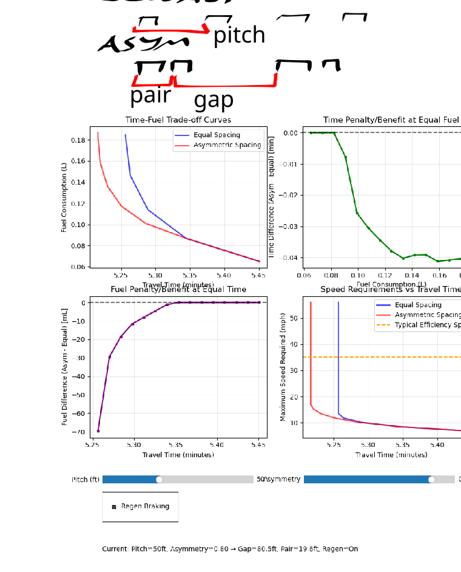

<h1>Garbage Pickup Bin Spacing</h1>

This <a href=https://gist.github.com/aavogt/601da0964e613d5962b58943ac214b43>model</a> suggests that bit of fuel or time can be saved by putting waste bins on altenating sides of the driveways. Running the model produces something like:


